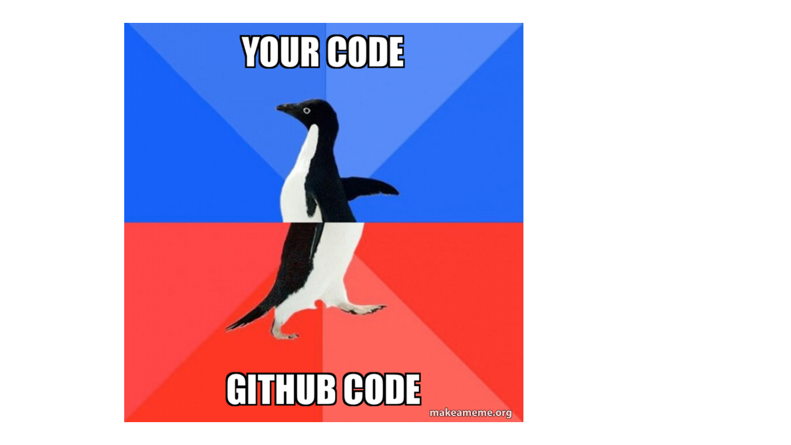

Aunque Git y GitHub facilitan el control de versiones de nuestros proyectos individuales, su máxima potencialidad se despliega al trabajar en equipo ya que facilitan el seguimiento del trabajo de todos los colaboradores y la integración ordenada de cada parte en un producto final.
Integración de colaboradores en el proyecto
Para dar acceso de edición a tus colaboradores, en la página principal de nuestro proyecto en GitHub entramos en “Settings -> Access -> Collaborators -> Manage Access -> Add people”. Los colaboradores pueden crear su copia local del proyecto de control de versiones clonando el repositorio remoto.
üìùEjercicio 2.1
En equipos de 2 o 3 personas:
- El dueño del repositorio invita al resto de integrantes del equipo a su proyecto
- Los colaboradores clonan el repositorio al que han sido invitados a su directorio de trabajo
Trabajo en paralelo
Ramificación
Git permite crear una “rama” (branch) paralela al proyecto si se desea seguir una línea independiente de trabajo, bien por ser diferente de la principal (p. ej. probar un nuevo análisis) o bien para desarrollar específicamente una parte del proyecto (p. ej. trabajar sólo en la escritura de los métodos de un artículo mientras otros colaboradores trabajan en otras secciones). Las ramas permiten trabajar en el proyecto sin interferir con lo que están haciendo los compañeros. En Git, una rama es un commit al que le se le da un nombre y que contiene un “enlace” (puntero o pointer) a un SHA específico que es el origen de la rama. La rama main es la rama por defecto cuando se crea un repositorio. Las demás ramas se crean con git checkout.
üìùEjercicio 2.2
Un integrante del equipo crea una rama en el proyecto en el que colabora
Modifica la primera frase del archivo README.txt y sube los cambios al repositorio remoto
üëÄ La primera vez que haces git push de una rama nueva en lugar de solamente utilizar git push utiliza git push --set-upstream origin <nombre de la rama>
Vuelve a la rama main y comprueba el archivo README.txt

¿Cómo se unen distintas ramas?
Cuando el trabajo desarrollado en una rama se da por finalizado y se quiere unir a la rama principal (“main”) hay que hacer la unión utilizando el comando git merge.
git checkout <rama principal>: posiciona el puntero de Git en el último commit de la rama principal a la que quiero unir la otra rama.
git merge <rama a unir>: fusiona los cambios hechos en las dos ramas.
Esto se puede hacer en el shell como acabamos de ver pero también se puede hacer con el botón “pull request” en la página del proyecto en GitHub.
Git puede encontrar conflictos al fusionar ramas que hay que arreglar manualmente. Esto ocurrirá si en las dos ramas se han cambiado las mismas líneas de un archivo. Git muestra dónde están los conflictos así:
<<<<<<código del main=======código de la rama a unir>>>>>>
Para solucionarlo hay que escoger los cambios de la rama principal o de la rama a unir según corresponda. Esto también se puede hacer a través de un cliente de Git, como GitKraken (https://www.gitkraken.com/) o SourceTree (https://www.sourcetreeapp.com/). Una vez solucionados, Git permite completar el merge (es decir, un nuevo commit que contendrá las ramas fusionadas). La mejor manera de evitar conflictos o por lo menos reducir su dificultad es realizar cambios pequeños y sincronizar frecuentemente con GitHub.
⚡Si durante el merge y la resolución de conflictos entras en pánico y no sabes si lo estás haciendo bien, siempre puedes volver al estado inicial antes de la fusión con git merge --abort (https://happygitwithr.com/git-branches.html#bailing-out).
üìùEjercicio 2.3
- Un integrante del equipo modifica también la primera frase del archivo README.txt en la rama main y sube los cambios al repositorio remoto. Esta frase había sido previamente modificada en una rama en el ejercicio 2.2.
- Un integrante del equipo combina la rama del ejercicio 2.2 con la rama principal (main) del proyecto.
- Resuelve el conflicto (es decir, quédate con los cambios que sirvan y sube los cambios al repositorio remoto).
Utilidades de GitHub para el trabajo colaborativo
Como ya sabemos, GitHub es un servidor de alojamiento en linea para albergar proyectos basados en Git que permite la colaboración entre diferentes usuarios o registrar versiones para uno mismo. En la clase anterior aprendimos como crear un repositorio y conectarlo a nuestro proyecto en RStudio, y hoy hemos visto como añadir colaboradores al proyecto, pero GitHub tiene muchas otras funcionalidades que facilitan el trabajo colaborativo.
Repositorios: visión general
Recordemos que un repositorio es como un “contenedor” de nuestro proyecto. GitHub facilita el acceso al contenido con todas sus diferentes versiones. En la página principal del repositorio podemos encontrar las siguientes pestañas:
Code: contenido del proyecto
Issues: foro del proyecto para comentar fallos, tareas pendientes, hacer peticiones a los desarrolladores, preguntar dudas, etc.
Pull requests: facilita la comparación y fusión (merge) de ramas desarrolladas de forma independiente.
Actions: son pequeñas aplicaciones que realizan alguna acción cada vez que se sube un commit (p. ej. tests).
Projects: es como una hoja de cálculo con tareas, encargados, deadlines, status, etc. que se integra con las incidencias y solicitudes de incorporación de cambios para ayudar a planificar las tareas y realizar el seguimiento del trabajo.
Wiki: es un espacio para documentar el proyecto (hoja de ruta, estado, documentación detallada…).
Security: opciones de seguridad.
Insights: estadísticas del proyecto.
Settings
En la pestaña Code encontramos el contenido de nuestro proyecto:
üìùEjercicio 2.4
- Revisad vuestra cuenta de GitHub y comprobad los cambios que se han hecho en el proyecto compartido, tanto en la rama main como en la rama creada en el ejercicio 2.2, quién los ha hecho y las lineas que se han cambiado.
Repositorios: historial
El historial de un repositorio (üïòXX commits) contiene una lista de enlaces a todos los commits que se han realizado en cualquiera de las ramas. Dentro de cada commit se pueden ver los archivos a√±adidos o borrados en esa ‚Äúcaptura‚Äù y las l√≠neas de c√≥digo a√±adidas (en verde) o borradas (en rojo) en cada archivo modificado. Además, en el historial, se pueden a√±adir comentarios en l√≠neas concretas de c√≥digo o comentarios generales al commit entero.
En GitHub también se puede acceder a la historia de commits de cada archivo en concreto (History) y al autor de cada parte del código (Blame).
El historial del proyecto y de los archivos tambi√©n es accesible a trav√©s de RStudio (üïí).
⚡Más información sobre como navegar en el pasado del proyecto aquí: https://happygitwithr.com/time-travel-see-past.html
üìùEjercicio 2.5
- ¿Cuantos commits se han hecho en el archivo README.txt?
Issues
En el ámbito de desarrolladores de software, los issues cumplen la función de rastreadores de errores. A nosotros nos interesa más utilizar los issues como una lista de tareas pendientes que permite incluir tareas para acordarte de lo que tienes que hacer, pero también se pueden usar para hacer peticiones o preguntas a los desarrolladores.
Se pueden asignar tareas o preguntas a los miembros del proyecto escribiendo “@” antes del nombre del colaborador.
En los issues también se puede referenciar a una línea concreta de código entrando en el archivo en la pestaña Code y clickando en el número de línea que se quiere comentar, o un commit entero copiando el SHA que aparece en el historial.
Una vez resuelto, el issue se cierra (Close issue). Se puede conectar el issue con el commit correspondiente si en el mensaje del commit añades git commit -m "Close #XX" (p. ej., “Close #1” para cerrar el “issue” número 1).
üìùEjercicio 2.6
- Crea un script en tu repositorio y añade algunas lineas o utiliza uno ya creado
- Publica un issue en el proyecto que incluya una lista de tareas asignando cada una a un colaborador
- Incluye una tarea que se refiera a una línea concreta del script
Git ignore
Al crear un repositorio se recomienda crear un archivo “.gitignore”. Este archivo contendrá los nombres o extensiones de los archivos del proyecto que por defecto no queremos compartir aunque estén en el repositorio local (p. ej., el archivo “.Rhistory” que RStudio crea por defecto). Es una buena práctica ignorar archivos que no sean útiles pare el resto de colaboradores así como archivos muy pesados (p. ej., una base de datos resultado de correr un script) para no subirlos y descargarlos continuamente de GitHub. Para añadir archivos al gitignore se puede utilizar el botón derecho del ratón sobre el archivo en la pestaña Git de RStudio pero también se puede añadir el nombre del archivo que desamos ignorar en el archivo “.gitignore” manualmente.
üìùEjercicio 2.7
- Un miembro del equipo descarga en su directorio de trabajo la última versión del proyecto compartido si aún no lo tiene (
git pull).
- Crea un nuevo archivo en la carpeta en su ordenador.
- Añade el nombre del nuevo archivo a .gitignore.
- Sube todo al repositorio remoto y comprueba que archivos se han subido (
git add . + git commit -m "XX" + git push).
üëÄSi has hecho un commit por error con archivos que quer√≠as ignorar, todav√≠a se puede arreglar. Primero tienes que decir a Git que deje de rastrear el archivo con git rm --cached <archivo>, despu√©s a√±adelo a .gitignore y haz un nuevo commit. El archivo no desaparecerá de tu ordenador pero con git pull se eliminará del repositorio remoto.
GitHub: la red social
GitHub no es sólo un repositorio remoto donde almacenar diferentes versiones de tu trabajo o desarrollar proyectos colaborativos, si no que también es una red de encuentro para programadores. Como en otras redes puedes cotillear perfiles, seguir a ciertas personas, tener seguidores, guardar proyectos que te gustan…
Con el buscador (üîç) puedes buscar aquellos contenidos que te interesan. La búsqueda está organizada por categor√≠as (Repositories, Commits, Issues, Users‚Ķ) lo que facilita encontrar lo que buscas. Para seguir a un usuario tienes la opci√≥n Follow. Pulsando Star‚≠ê puedes guardar un enlace a cualquier repositorio en tu cuenta de GitHub y con Fork estar√≠as guardando una copia con la que puedes interaccionar. Con WatchüëÅÔ∏è puedes hacer un seguimiento de un repositorio. Download te permite guardar una copia de cualquier repositorio público en tu ordenador.
Fork
GitHub contiene multitud de proyectos públicos que todos los usuarios pueden clonar y desarrollar independientemente. Al hacer una clonación, se crea una ramificación o copia del proyecto (“fork”) que pasa a formar parte de tu cuenta de usuario en GitHub. En caso de que desees unir los cambios realizados al proyecto original, deberás solicitarlo (=“pull request”). El dueño del proyecto decide si acepta o no los cambios que propones.
Session Info
[1] "2022-11-23 16:30:00 CET"
Local: main C:/Users/veruk/Desktop/Disco/Curso GitHub/intro_git-github
Remote: main @ origin (https://github.com/Julenasti/intro_git-github.git)
Head: [88810a0] 2022-11-22: solve git cached typo
R version 4.1.3 (2022-03-10)
Platform: x86_64-w64-mingw32/x64 (64-bit)
Running under: Windows 10 x64 (build 22000)
Matrix products: default
locale:
[1] LC_COLLATE=English_United States.1252
[2] LC_CTYPE=English_United States.1252
[3] LC_MONETARY=English_United States.1252
[4] LC_NUMERIC=C
[5] LC_TIME=English_United States.1252
attached base packages:
[1] stats graphics grDevices utils datasets methods base
loaded via a namespace (and not attached):
[1] digest_0.6.29 jsonlite_1.8.0 git2r_0.30.1 magrittr_2.0.3
[5] evaluate_0.15 rlang_1.0.4 stringi_1.7.6 cli_3.3.0
[9] rstudioapi_0.13 rmarkdown_2.13 tools_4.1.3 stringr_1.4.1
[13] htmlwidgets_1.5.4 xfun_0.30 yaml_2.3.5 fastmap_1.1.0
[17] compiler_4.1.3 htmltools_0.5.2 knitr_1.38